来源：https://evs6m7y1q3.feishu.cn/docx/I9OAdzzs2oBliNxsmPjcHnBUnzf
大家好，我是秦汉唐，一个7年私域老兵，擅长私域运营、商业项目拆解&复制。
相信有很多做私域的小伙伴会发现，就是我们在做私域的过程中都会碰到一个问题：就是你的私域做的再好，项目后面的转化链路、企业员工培训做得再好，如果项目前面流量的问题没有搞定的话，都没有用！
私域只是一个渠道，是帮助我们企业更好地跟客户建立关系和发展粘性的一个渠道，其实更重要的是前端的流量，你有没有打开流量，每个月是否有稳定的流量进来。
我们之前服务过一些电商公司，他们想法也蛮多，要把客户发展成推广员，发展成代理等等，但是前端的流量一直迟迟没法搞定。没法搞定的原因并不是说他们公司的订单不够，也不是说老客户不多，而是说他们电商的老客户基本上都在另外一个部门，他们不愿意放手。所以私域的痛点不在于私域怎么做，而是前端流量如何来。
那么如何破局？
于是我们在这些年做私域代运营的过程中，也尝试孵化了一些自己的流量型项目。
相信大家平时都有刷小红书、抖音、豆瓣、快手这些平台，平时没事的时候我也喜欢刷各种抖音刷快手刷小红书，这时算法就开始主动给我反馈，于是我就看到很多自己感兴趣的商业的项目，一些不起眼的小项目。这个时候我就很好奇，就会去尝试拆解他们从前端的内容生产，再到后端的导流私域及之后转化成交的整个流程。
拆下来之后，我就发现很多时候有些项目是完全可以复制的，是不需要投入几十万也可以复制的。复制了之后，用跟他一样的内容生产方式、转化链路，你也能拿到一定的结果。这些结果就成了你变现的收入，哪怕只有他的1/10，那也是一笔不菲的业余收入。
事实证明，我们通过拆解各个内容平台的作品，也可以找到很好的商业项目实现副业变现。今天跟大家分享的主要就是运营人如何通过商业拆解挖掘并复制副业项目?
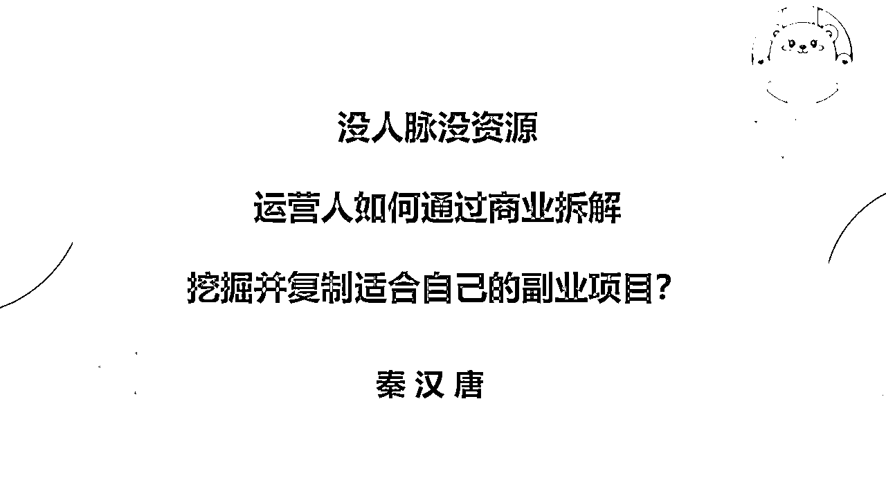
先跟大家分享几个我觉得比较典型的案例。
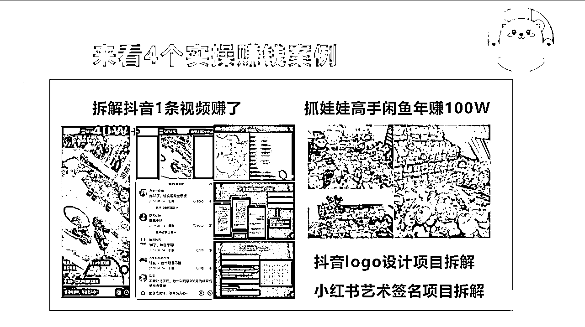
第一个案例是几年前我通过拆解1个儿童游乐的爆款视频，通过复制对方的模式，三个月变现40万。
当时是在老家过年，晚上没事刷抖音，突然发现一个视频，是一个商场中庭里搭建的场地，场地中是模拟工地施工，几个合金挖掘机、塔吊、翻斗车在跑着，周围环绕了一堆小朋友和大人，有几个拿着遥控器一直在挖土卸土。看到这儿，我内心中潜藏很久的挖掘机梦开始熊熊燃烧了起来，我在页面上足足停留了好几分钟，说实话，如果这是在我家附近商场开的话，我也会选择去玩。
好奇之下注意到了这个视频的数据，8.4w 赞，1.1w 转发，3000 多条评论！估计播放量得有 1000w+了。好奇之下点开了评论区，看看是不是只有我一个幼稚鬼。结果发现了新大陆，在评论区里除了看到很多人跟我同感之外，还有很多咨询的线索：「苏州有吗？」「可以加盟吗？」「我也想在我这的万达搞一个，怎么加入？」......
作为一个敏感的互联网人，几乎是下意识地在所有跟他们建联的触点上做了操作：
1. 模仿上面的咨询语气在评论区留了言。
2. 关注账号，假装很急的样子私信了他们。
3. 拨打了他们主页的官方电话。
不出意外，2 个小时后（估计是流量太大接不过来），私信窗口给我发了一个微信号，成功加上了微信。加上微信后，给我发了 2 个文件：《已被加盟的城市地图》&《代理政策》。他们分为市代和区代，加盟费用总共在 4w 左右，市代可以发展代理拿返点。我看到文件中已经有 130 多个城市被拿下了市代，我当时想咨询苏州市代的，已经晚了一步。
于是我就想我可不可以复制一下，我不要赚 500 多万，我赚 50 万行不行？那这个时候就由因此产生了后面的事情。
我就找了一个我的技术的小伙伴搜索这家公司全网的信息，发现就是他们这家公司是一个广州的贸易公司。它不是源头的厂家，也不是终端的门店，它就是拿货卖赚的差价的，所以可以得出结论——货源不在它。另外，我们发现这家公司开的淘宝店铺、京东店铺、拼多多店铺等全网的各个店铺，产品销量卖得并不好。还有他之前做的所有的事情，其实都是把他们的这个当成把他把这种的产品当成货来卖。而这条视频爆了是因为他们把卖货改成了卖门票。而这样的消费场景，一下子就打到人的这个心里面，特别是男生的心里。
分析完上述内容后，我基本上判断这个项目是可以复制的。首先，这个视频爆得偶然；其次，他货源不是他自己的，也就是说我可以通过别的方式找到他的货源；最后，这个消费场景经过验证是证明是有需求的，而且需求量还不小。
于是我们就做了后面的几件事。搭了一个小团队，三个人，我，一个技术伙伴，还有一个商务伙伴。
商务小伙伴去跑到深圳去找厂家货源，拿到了极低的成本价，同时还拿到了一年的保修。 接着，我自己定产品，对方是4.5万1个加盟费，我们直接定 2 万。
定完产品定引流渠道，我觉得做生意需要确定性，我不需要偶然性，所以我就设计了两个渠道，两条腿走路。
第一个渠道是通过我们投放抖音作品找流量。只要视频下面评论区有人评论有效的信息，那我们就立马去投放。当时搞了三个账号，每天基本上都投放，这是第一条路。
第二条路就是我们去找了私域上面有很多公众号，就是教大家怎么去做副业的，或者是还有教大家怎么去做生意的等等这些公众号。我们找到公众号跟他们合作，就是说我这边有这样的一个项目，推荐成功之后我给你分润。
定下来之后，三个月时间内我们招了 40 多个加盟商，2万一个就是 80 多万，刨去各种成本费用，基本上半个月我们赚了40万。就这样，把事儿做成了。
该项目更详细的复盘帖请戳下方查看👇
第二个案例是抖音上的一个账号：文川手写。
这是一个帮别人设计 logo 的账号，他是通过手写的方式把一个logo从创意到产出的过程呈现出来的，让人眼前一亮。我当时刷到时候，粉丝量不多，但是下方评论区有一堆人评论：怎么找你设计 logo，你设计一个多少钱，我这边开了一个奶茶店，怎么设计 logo 你能帮我设计吗……这类有效的客资信息。
当时我就想就是这样的一个项目其实也是可以复制的，为什么呢？
首先，它这个创意生产的方式是固定的，那对我们来说无非就是找一个这样的软件，或者是找一个设计师把它做出来。
其次，流量端我们通过发这些内容就可以稳定了，每个月能来个几百个意向咨询。接下来搞定转化交付端就行。
有人说我不会设计logo怎么办？我怎么做这个生意？那我们可以去找大学里面的设计专业的大学生帮我们做设计，我们找 50 个这样的大学生，给他派单，我每个月有几百个咨询，比如说我收一个 599 设计价格，我们给他大学生 200 或者 250 费用，我们中间赚一半，那这个这个项目又成了。
就是这样一种方式——通过刷抖音或者刷小红书的过程发现商业案例，再拆解复制这样的案例去形成一个商业模式，去发展自己的副业。
这样的案例其实有很多，再举个类似例子，大家有没有看过抖音和小红上面帮你设计艺术签名的？在小红书上面和抖音上面其实有很多这样的账号，你去做这样的一个账号其实也很容易起量，持续发内容很多人会来咨询你。
比如说有人问：我这个名字秦汉唐应该怎么写，能帮我设计一个吗？
你这个时候就可以私信他，让他加你微信9.9一个，然后去找那种专门设计艺术签名的网站。对你来说是免费的，但是对他来说他是要付费，这样做一天成交个几十个客户，每月赚点零花钱是可以的。
设计艺术签名的免费素材全网有很多。而且经过我们验证，通过这个艺术签名的这样的一个在小红书里面的笔记爆的概率是比较大。就这样的一个小项目，它不能让你发大财，但是能让你每个月都挣小几千块钱是没问题的。
还有一个给大家重点分享的案例，从一位生财大佬涛哥那边看到的。
就是有一个哥们，他是一个抓娃娃的高手，经常去线下的商场里用抓娃娃机抓娃娃，抓完娃娃他就把娃娃放到家里面，结果后来他家里面也放不下，他自己也用不着，他就挂闲鱼上去卖，一边抓一边卖，他就这样卖娃娃就能赚 40 多万一年。
同时他把这些买娃娃的人引流加微信加到私域里面来，又发展了另外一个变现模式——收徒弟。我教你怎么去商场抓娃娃，收599一个学费。他就这样把买娃娃的那些人又发展成徒弟，进行了二次变现。徒弟也收了几百个，抓娃娃卖娃娃的钱收入和收徒弟的收入加起来，一年能给他赚个 100 来万。
其实他只会这一个技能就抓娃娃，就这样通过思路的迭代，从卖货变成收学费增加了额外的收入。
同样的方式，不知道大家在抖音上有没有刷到过一个教飞纸牌切水果的，从自己出于爱好研究了这个技巧，然后发到抖音上~不想视频爆了，很多人来追着说想学。他就开了线下教学班，899/人，只要 10 天速成教你飞扑克牌切水果。
那这样的案例，你如果去留心观察，并且定期去看他们账号的各个细节，包括个人主页、评论区、作品的迭代、他的引流和变现方式。你发现一个就去记录到飞书表格上，接着去拆他的流量、转化、拍他变现产品。通过三个月的有意记录，就能积累几十个，形成1个项目库。紧接着无非就是从这几个项目里面去找一个你能够复制的。
好，分享案例，接下来想和大家分享：如何从看到一个内容，产生想法，再到实战落地执行拿结果，的过程。
接下来跟大家讲具体我们这几年沉淀下来的做副业项目的方法论。
首先给大家分享两个我们做项目必须具备的要素，一个叫赛道，一个叫渠道。
赛道就是就是你的业务基本盘，卖货卖课卖自己！
可以选择的方式有很多，你可以卖货，做各类电商；
卖服务：美容套餐、装修服务、餐饮等等；
卖课程：自己的1V1咨询服务、卖自己的训练营、卖代运营服务等等；
渠道就是你的营销渠道，你的客户在哪里，哪里就是你的渠道。
这个渠道包括市面上各大主流的公域平台，抖音、快手、小红书、视频号、英语、豆瓣、知乎一类的内容渠道，也包括电商渠道。
比如我的赛道是女装，我的渠道可以是小红书，还可以是抖音，但我的赛道、我的业务基本盘就只能是卖女装，是卖货。
所以你做任何项目都需要这两个事，一要定你的赛道，二要定你的渠道。
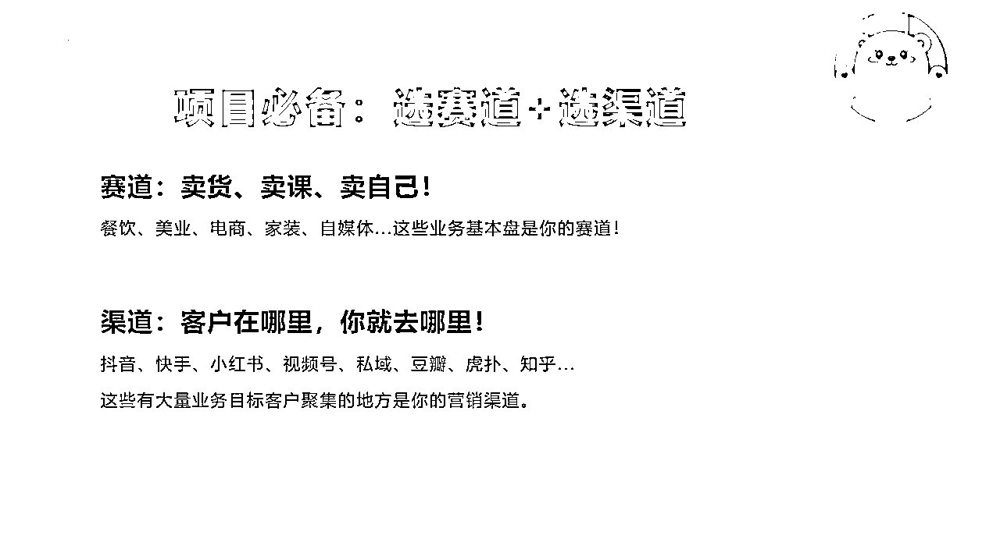
那么，渠道其实是有信息差的，我们做过很多项目，其实吃的就是信息差，有些项目在抖音上做得很烂的，但是如果你搬到小红书上面，瞬间就爆了。有些项目在小红书上面做的人很多了，那你把同样的内容优化一下，搬到抖音上，也有可能把它做爆。
我们自己在孵化的很多项目就是基于这种搬运的玩法。
有一个词叫做后发制人。就是你去做别人做过的事情，将其进行复制或者二次创作。
其实我不是很喜欢原创，这个可能有点不符合现在的主流价值观，但是我不喜欢赌博和 all in，有可能你花了半天做出1条原创视频或者小红书笔记，满心欢喜的发布出去，结果就收获了几百个阅读 。我一定是看别人已经做成了，已经做了好几个月了，我才会选择做这个项目做这个赛道。
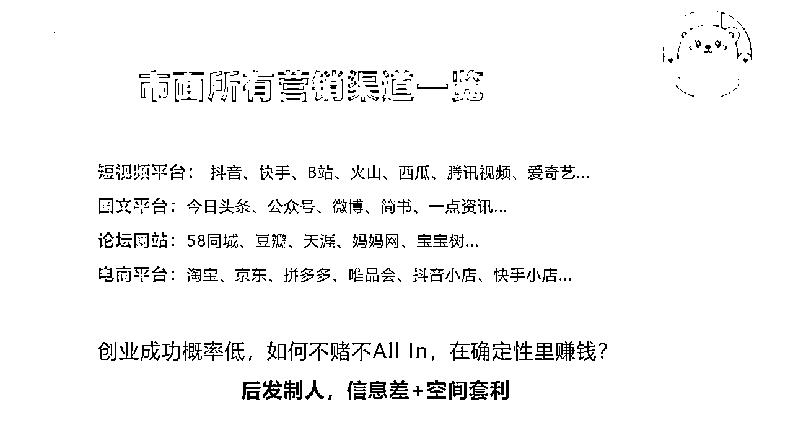
那么有人问，怎么去找到这样的项目？
今天给大家分享3个方法，通过这个方法可以建立自己的赚钱情报挖掘体系。
首先你要学会喂养算法。
从毕业开始到现在几年时间里，我都保持一个习惯，就是每天要保持两个小时的商业内容的泛阅读。一开始喜欢看今日头条，今日头条是算法逻辑，于是我就强行让自己在那些商业文章上停留很久，类似这种内容：一个濒临倒闭的母婴店，如果通过这一招社群裂变，7天营业额突破10W+？
我就不断的点赞收藏关注，然后坚持了一、两个月之后，它就不断地给我推送这些文章。它每给我推荐一个，我就关注收藏点赞。就这样，我的今日头条账号里面关注了几百个这样的商业类账号。
无论是抖音还是小红书，还是今日头条，还是现在的公众号视频号，都是算法逻辑。我上面讲的几个案例、还有我自己拆过的几百个项目，很多都是通过喂养算法刷到的。但是做到这一点大家要注意的是，要保持定力！别看到一些帅哥美女、娱乐八卦的内容，就停留很久或者就评论了，这样系统算法会不断给你推荐这类内容，你很难再刷到正经的商业内容了。
所以如果你发现了一些好的内容文章。第一时间要做的收藏、点赞关注，你可以：
1、把这个文章分享到你自己建的一个微信的群里面，这个群里面只有你和你的小号。
2、一个星期整理一次，把你群里的文章全都整理到你的一个飞书文档或者飞书表格里面，把它按照项目的拆解的逻辑把它整理下来。
3、整理完之后，建立项目库，然后根据流量、转化、产品交付难度等各个维度，设置权重，给他们打分。分数高的项目，不出意外，就是你接下来可以做副业的发展方向。
其次，要学会搜索：
1、你要学会分辨你搜索的这些信息源真伪和干货程度。比如说我通过百度搜索副业一下子出现了10 条，那你要分析有些人是为了给你营销的，还是真心实意写给自己写复盘的。
2、你要学会泛读。搜索的时候不要点击第一条点进去看半天，再看第二条，而是一下子搜索几十条，全部打开在浏览器上，然后快速筛选无用的信息，再将剩下的信息布局二次筛选，最后筛选出来对自己有帮助的，再进行精细化地分析。
3、需要有一定的技术实力，或者你认识一些比较靠谱的技术小伙伴，可以做一些爬虫、以及数据监测的开发。现在有很多平台都有这样的一个数据的监测功能，就是监测你对于你关注的某一个领域的一些同类型的账号。你可以去找各大平台数据网站，在里面物色一些比较好的账号。然后通过在这些平台上，你可以监测他发的每个作品，以此来发现新的机会。
以上，就是我要跟大家分享怎么建立赚钱情报挖掘体系。
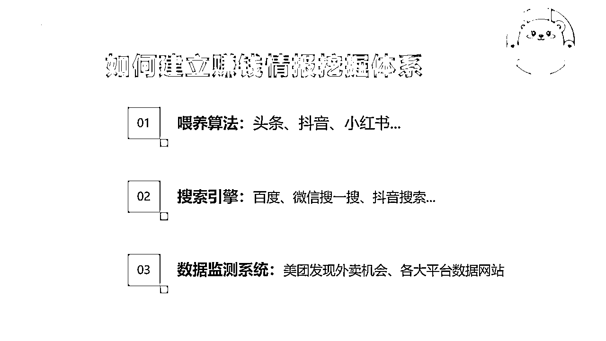
接下来，分享就是怎么去系统拆解一个赚钱项目，我会我们会把它分成八步：
1、找项目。建立项目库。
2、拆流量。它是通过什么方式引流？是不是固定的内容分享方式去引流的？还是投放？市面上他们有没有其他的引流渠道？
3、拆转化。它是通过什么转化？直接在直播间里面卖、还是引流到私域后通过社群转化？还是通过朋友圈+私聊？转化周期多久？
4、拆产品交付。这个产品是有形的产品，还是无形的产品？是货物、还是课程，还是招商加盟的项目，客单价怎么样？好不好卖？有没有同行做了半年以上？
5、评估可复制性和可持续性。比如说他这个产品你需要投入五万十万的，那这个事情短期内复制不了；同行没有坚持三个月以上，持续不了，如果他坚持三个月以上说明他挣到钱了，那就可持续。
6、定策略。你自己定你的产品，你的流量，你的转化，这三个端口怎么做？是复制全部还是通过你的擅长点进行微创新。像我刚刚讲的就是儿童游乐项目这个事情，这个项目我就进行了流量端口的微创新。
7、定完策略之后要搭团队。你要把这个事情分为几个点，比如产品端、流量端，转化端是否是一个人就够了，还是需要两三个人？
8、强执行。最重要的就是最后一步，如果你没有强执行，前面说的所有一切都是自嗨，没有用。
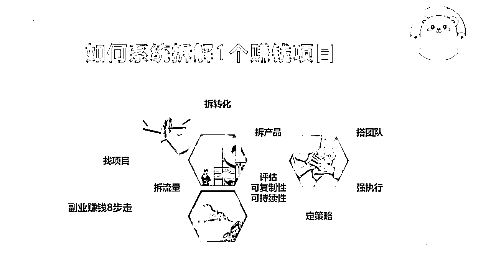
分享完拆解一个赚钱项目的全部流程，接下来给大家分享怎么通过项目管理思维，让你的这个从 0 到 1 更稳定地进行，形成一个闭环。
首先我自己做乙方做了很多年，服务过大型的全国型集团项目，小的项目也做过只有一两家门店的。经历了很多很多坑之后，我发现如果要做事情，特别是要把一个事情完成，一定要有一个系统科学的方法论。那这个方法论是什么？就是项目管理。
项目管理。我把它分为两个部分，一个叫策划案，一个叫执行案。
策划案是什么意思？比方说，你是乙方，需要先跟甲方沟通对这个事情的预期是什么样子的？希望多长时间完成这个预期，有没有量化的指标？
然后，我们围绕甲方的这个需求，做一些简单的方向型的规划。比如说这个私域怎么做？我会说从门店自然流量和通过线上淘宝的流量把它做起来。也可以是去投放广告等等。
策划案就是一个想法、规划、目标制定；
执行案就是人员分工、分解执行、过程监控、结果复盘。
策划案，包括你产品货盘是什么。这个产品货盘包括定价、规格。比如说你是做化妆品的，有的是 100 毫升的，有的是 500 毫升的，有的是 1000 毫升的。那我 100 毫升的是要作为引流产品对吧，我价格比成本稍微高一点就行，我不赚钱。那 500 毫升我可以做成一个盈利产品或者是口碑产品，我稍微赚一点，但这个 500 毫升要走量。1000 毫升是我的一个套餐，我是要做高利润。前面引流产品和爆款产品，吸引过来的客户都加到微信上买我的 1000 毫升的这个叫产品货盘。同样的卖课也是这样的，9.9的引流课、 599 的训练营，1999 的全套陪跑等等，这些都是要规划的。
第二个是运营策略，运营策略就是你怎么引流、怎么转化、怎么售后交付维持口碑等等。
第三个是目标制定。你一定要有目标，没有目标的话你自己是懵的。你做事的时候懵了，就没有紧迫感，也没有欲求，所以你一定要定你做这个事情的最终目标是什么，并且要拆解成这种阶段性的目标。比如说我做这个儿童游乐项目，我的目标我刚开始定的就是我招 100 个代理，我3个月我要招 100 个代理，然后一个代理2万，每个代理50%的利润。最后完成了50%，也可以了对吧。但是你要没有目标你就没办法让你有很急迫地完成这个事情的热情。
第四个是里程碑。里程碑是什么意思呢？就是你在做这个项目的过程中，有一些对你来说有关键性的目标叫里程碑。比如说我做这个儿童游乐项目，对我来说第一个里程碑是什么？第一个里程碑是第一个代理。 因为它意味着我从引流到转化完成了闭环。第二个里程碑是什么？就是我的某一个渠道跑通了，比如说我从做抖音投放引流，那抖音投放来的渠道给我完成了第一个代理的加盟收入。那就说明这个引流方式在被我验证成功了。
第五个，止损点。止损点什么意思呢？就是你做这个事情不用继续了，你做这个事情的最大限度，你能够承担多大的损失。这个止损点包括你的时间成本、还有你的金钱投入、资源投入。比如说我对这个是项目的预期有三个月，我三个月保持日更，如果三个月跑不成功，我就不做了，再好我也不做了。那三个月就是你的止损点，或者说这个事情我最多投入 5 部手机，也就是说一部手机 1000 块，我们最多投 5000 块钱，如果做不起来我就不做了。那这个止损点是需要你设计的。
第六个，放大操作点。除了不好的预期，也要有好的预期。比如说你做这个项目，本来预期三个月，结果跑了一个月你就把它跑通了，实现了第一个里程碑。那这个时候就是放大操作点，把项目中的这些点列出来。拆解下来后，要定一个总目标，再定你的运营策略，定你的货盘，再定一些关键节点，这叫策划案。而策划案当中过程中会有 N 多小细节，操作细节。比如说这一周需要干嘛，第二周需要干嘛……
接下来就是执行案了。执行案就是有几个关键要素：时间、地点、事项、责任人、阶段性目标。大家可以看一下我列的这张图，这是一家集团公司的三年GMV的测算预估。这家公司全国有六七千家门店，沟通完之后做出来的策划案，也就是GMV、全年营收的预估几个部分组成，每个部分大概需要多少费用，能够产生多少收入等等。
执行案是什么呢？某一年某一月的核心工作事项。第一个模块是什么？这个模块里的二级事项有哪些？具体内容是什么？负责人是什么？协助人是谁？完成日期是什么？完成的时候要把它标绿，然后未完成或者延期的要把它标红。这个叫执行案。
其次，项目管理当中有一个非常重要的原则。你把这个计划表做出来之前，可以千万次的犹豫和纠结。但是一旦你把截止日期和负责人和这个具体的事项确定下来，就要毫不打折扣地完成。因为你如果前一个事项打折扣了，那就会形成补排效应，你后面的事项都会往后，都会延期的情况下，你整个人心理状态，做这个事情的动力和心态都会变得很糟糕。
这是是我们之前做乙方的时候，无数次跟甲方重复强调的事情。10号要完成的任务，你就不能给我 11 号完成，10号必须一定要给我。
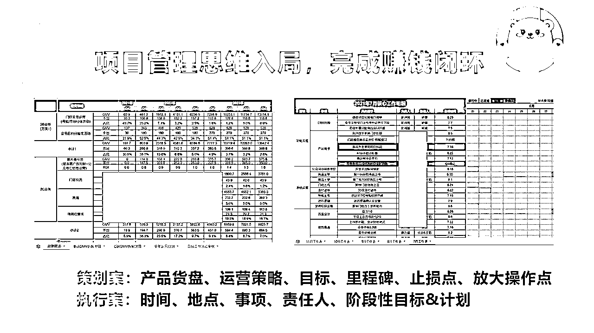
以上就是项目管理，这个项目管理可以帮助大家把一个赚钱的 idea 变成一个具体可实操的很详细的一个执行计划。
讲完了从0-1，再和大家分享如何通过3个杠杆来实现1-100。
1、人力杠杆。
人力杠杆顾名思义是低成本的兼职。比如说要做小红书。我们招了很多兼职小伙伴，通过我们自己的内容生产模式，做成一个 SOP ，帮我们去做引流，5 到 10 分钟一篇笔记，引流加一个微信我给你多少钱。这样的话我可以同时有几百个账号帮我们去引流，而不是你一个人在那边吭哧原创三个小时，结果就发了一篇笔记，留言就几条，这样很难坚持。但是人力杠杆有个前提，就是你的成本要低。
2、技术杠杆。
技术杠杆就是顾名思义通过软件释放你的双手。比如说你可以批量的把某一个领域的小红书笔记批量地扒一下，因为你要抄同行。比如我做 K12 ，我就把教育行业的把深圳的 K12 账号内容获50赞的笔记，通过软件把它批量扒下来，批量的搬运，批量复制，批量的二次原创，批量的上传。然后就找很多人去分发，用这种工业化的流水线这种方式去完成。
3、资源杠杆。
资源杠杆这边我就不多说了，其实就是资金、人脉，不太适合我们大多数人。
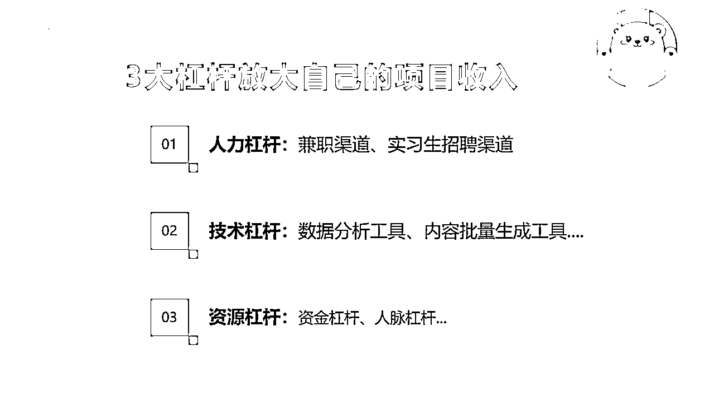
那么分享完杠杆的事情，接下来就是跟大家讲就是我们自己在往年的一些做项目的过程中踩坑的一些事。
我总结了几个标准：
1、重资产的，不要碰。
我想做创业，要准备个 30 万加盟品牌装修店铺，那这个事情就没必要了。对我们来说，试错成本太高了，我不喜欢试错。
2、自己搞不懂的，不要碰。
比如说NFT、区块链、股票，我自己都没有任何这种金融知识的领域，哪怕再赚钱，我身边好兄弟赚到钱，他告诉我这个行业挣钱我都不会去做，因为我自己没做过。
3、自己不喜欢的，不要碰。
我在 19 年的时候，正好认识一个大学同学，他有个朋友是做那个阳澄湖大闸蟹的，他爷爷就是蟹农，这时候我们就两个小伙伴一起做了这个事，就是准备搞一波大闸蟹电商。我就是开始了自己的第一次赚点小钱的实干之路。但是，做起来之后我会发现我自己一点都不喜欢做电商卖货这个事，我自己一点都不感兴趣。
我自己一个人要找人设计品牌 logo ，又要搞定这个渠道分销，还要搞定一些流量主播帮我们去卖货，还要搞定卖货软文，还要管售后发货……大闸蟹送过去送到人家那边断了两条腿或者死掉了，冰冻这次没做好死掉了，要退货要发货……搞得很累。虽然我们当时做了 4 个月的时间，但是就挣了 20 来万。
我从这个事情上我得出一个结论，我这辈子不会再碰电商，或者说碰电商，但是不要让我搞定售后供应链这个事，所以我就自己做我现在所关注的赛道——知识付费和虚拟类目。
这也是为什么我说自己不喜欢的，不要碰，而是一定要做跟你的爱好和你的能力模型相匹配的项目。
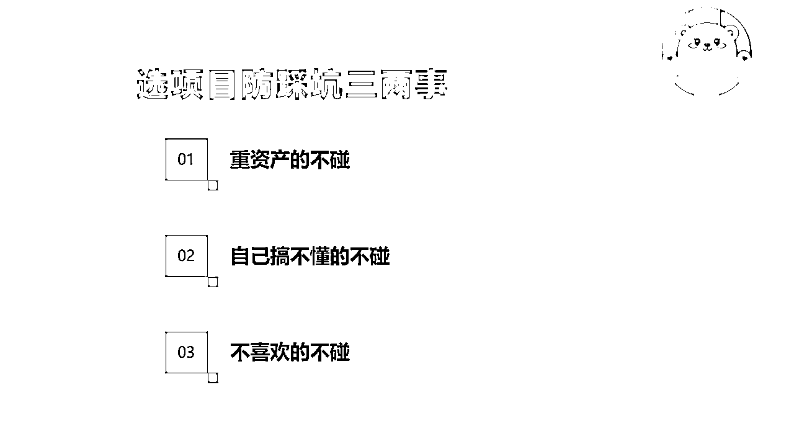
最后，给大家分享一些，如果做项目，你需要具备的一些基础的能力模型。
1、你要有搜索能力，基本的搜索能力。比如说百度，你要能分辨它是广告还是真实的。
2、你还要能够找到一些低成本的兼职渠道。
3、再比如说你这个项目有很多人在做，比如说几个合伙人，你怎么设置分润比例呢？
4、当我们在做自媒体的时候，你又要搞流量，又要搞定转化，同时还要不断打磨自己的产品的时候，你这个时候你怎么分配你的有限的精力呢？
再送给大家几句话：千万不用担心现在有些赛道大环境不好，市场太卷，竞争对手太多。你要知道，任何一个红海的赛道都不缺一个一年赚几十万的人，都不缺你一个一年赚几十万的人。
所以你唯一能够要做的事情就是找到一个别人做过的事情，做了并且稳定有赚钱的项目。确定好赛道，给他们更匹配一点的调整就可以赚到钱。从 0 到100w，其实就是找到一个项目。
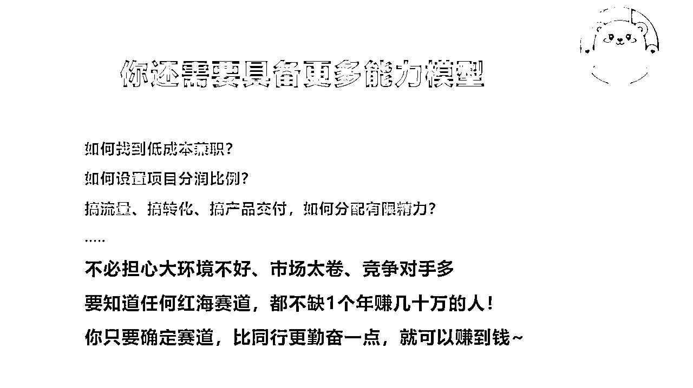
以上，就是关于《上班族如何通过商业拆解挖掘并复制副业项目》的分享，我是做了7年私域运营的秦汉唐，擅长私域运营、商业拆解、复制互联网项目，5年来拆解200+项目并成功复制6个项目，累计变现数百万，欢迎链接，一起交流副业、流量、赚钱。
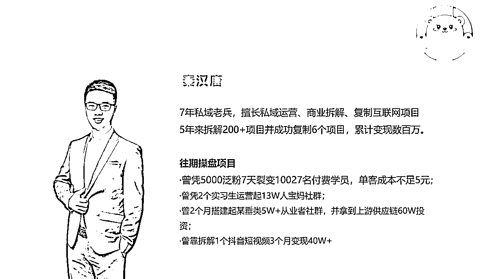